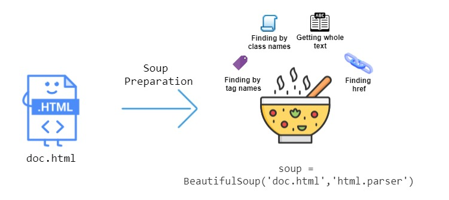
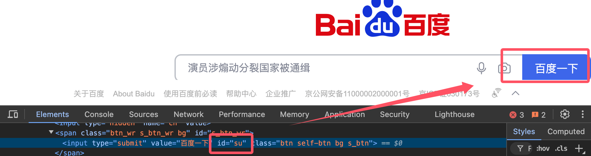

Python スクレイピング - BeautifulSoup
Python スクレイピング（Web Scraping）とは、Python プログラムを作成してインターネットから自動的に情報を抽出するプロセスです。
スクレイピングの基本的な流れは、通常、HTTP リクエストを送信してウェブページのコンテンツを取得し、ウェブページを解析してデータを抽出し、その後データを保存することを含みます。
Python の豊富なエコシステムは、特に強力なライブラリのサポートにより、スクレイピングを開発するための人気の言語となっています。
一般的に、スクレイピングのプロセスは次のいくつかのステップに分けることができます：
- HTTP リクエストを送信する：スクレイピングは HTTP リクエストにより対象ウェブサイトから HTML ページを取得します。一般的に使用されるライブラリには
requests。 - HTML コンテンツを解析する：HTML ページを取得した後、スクレイピングはコンテンツを解析してデータを抽出する必要があります。よく使われるライブラリには
BeautifulSoup、lxml、Scrapyなどがあります。 - データを抽出する：HTML 要素（タグ、属性、クラス名など）を特定することで、必要なデータを抽出します。
- データを保存する：抽出したデータをデータベース、CSV ファイル、JSON ファイルなどの形式に保存し、後で使用したり分析したりできるようにします。
この章では主に BeautifulSoup を紹介します。BeautifulSoup は HTML および XML ドキュメントを解析するための Python ライブラリで、ウェブページからデータを抽出でき、ウェブスクレイピングやデータマイニングによく使用されます。

BeautifulSoup
BeautifulSoup はウェブページからデータを抽出するための Python ライブラリであり、特に HTML および XML ファイルの解析に適しています。
BeautifulSoup はシンプルな API を提供することで、ウェブページ内のコンテンツを抽出および操作でき、ウェブスクレイピングやデータ抽出のタスクに非常に適しています。
BeautifulSoup のインストール
BeautifulSoup を使用するには、beautifulsoup4 と lxml または html.parser（HTML パーサー）をインストールする必要があります。
pip を使用してこれらの依存関係をインストールできます：
pip install beautifulsoup4 pip install lxml # 推荐使用 lxml 作为解析器（速度更快）
lxml がない場合は、Python 組み込みの html.parser をパーサーとして使用できます。
基本的な使い方
BeautifulSoup は HTML または XML データを解析するために使用され、解析ツリーをナビゲート、検索、変更するためのいくつかのメソッドを提供します。
BeautifulSoup の一般的な操作には、タグの検索、タグ属性の取得、テキストの抽出などが含まれます。
BeautifulSoup を使用するには、まず BeautifulSoup をインポートし、HTML ページを BeautifulSoup オブジェクトに読み込む必要があります。
通常、最初にスクレイピングライブラリ（例：requests）を使用してウェブページのコンテンツを取得します：
例
import requests
# requests を使用してウェブページのコンテンツを取得する
url = 'https://cn.bing.com/' # Bing 検索エンジンのウェブページのコンテンツを取得する
response = requests.get(url)
# BeautifulSoup を使用してウェブページを解析する
soup = BeautifulSoup(response.text, 'lxml') # lxml パーサーを使用する
# html.parser パーサーでウェブページのコンテンツを解析する
# soup = BeautifulSoup(response.text, 'html.parser')
ウェブページのタイトルを取得する：
例
import requests
# タイトルを取得したいウェブサイトを指定する
url = 'https://cn.bing.com/' # Bing 検索エンジンのウェブページのコンテンツを取得する
# HTTP リクエストを送信してウェブページのコンテンツを取得する
response = requests.get(url)
# 中国語の文字化け問題
response.encoding = 'utf-8'
# リクエストが成功したことを確認する
if response.status_code == 200:
# BeautifulSoup を使用してウェブページのコンテンツを解析する
soup = BeautifulSoup(response.text, 'lxml')
# <title> タグを検索する
title_tag = soup.find('title')
# タイトルのテキストを出力する
if title_tag:
print(title_tag.get_text())
else:
print("<title>タグが見つかりません")
else:
print("リクエストに失敗しました。ステータスコード：", response.status_code)
上記のコードを実行すると、タイトルは次のように出力されます：
搜索 - Microsoft 必应
中国語の文字化け問題
requests ライブラリを使用して中国語のウェブページを取得する場合、エンコーディングの問題が発生し、中国語のコンテンツが正しく表示されない可能性があります。中国語のウェブページを正しく取得して表示するには、通常、ウェブページの文字エンコーディングを処理する必要があります。
エンコーディングの自動検出 requests は通常、レスポンスヘッダーの Content-Type に基づいてウェブページのエンコーディングを推測しますが、正確でない場合があります。その場合は、chardet を使用してエンコーディングを自動検出できます。
例
url = 'https://cn.bing.com/'
response = requests.get(url)
# chardet を使用してエンコーディングを自動検出する
import chardet
encoding = chardet.detect(response.content)['encoding']
print(encoding)
response.encoding = encoding
上記のコードを実行すると、次のように出力されます：
utf-8
ウェブページのエンコーディング（例：utf-8 や gbk）がわかっている場合は、直接設定できますresponse.encoding:
response.encoding = 'utf-8' # 或者 'gbk'，根据实际情况选择
タグを検索する
BeautifulSoup は、ウェブページ内のタグを検索するための複数のメソッドを提供しています。最も一般的なものには次のものがあります：find() 和 find_all()。
find()最初に一致するタグを返しますfind_all()一致するすべてのタグを返します
例
import requests
# タイトルを取得したいウェブサイトを指定する
url = 'https://www.baidu.com/' # Bing 検索エンジンのウェブページのコンテンツを取得する
# HTTP リクエストを送信してウェブページのコンテンツを取得する
response = requests.get(url)
# 中国語の文字化け問題
response.encoding = 'utf-8'
soup = BeautifulSoup(response.text, 'lxml')
# 最初の <a> タグを検索する
first_link = soup.find('a')
print(first_link)
print("----------------------------")
# 最初の <a> タグの href 属性を取得する
first_link_url = first_link.get('href')
print(first_link_url)
print("----------------------------")
# すべての <a> タグを検索する
all_links = soup.find_all('a')
print(all_links)
出力結果は次のようになります：
<a class="mnav" href="http://news.baidu.com" name="tj_trnews">新闻</a> ---------------------------- http://news.baidu.com ---------------------------- [<a class="mnav" href="http://news.baidu.com" name="tj_trnews">新闻</a>, <a class="mnav" href="https://www.hao123.com" name="tj_trhao123">hao123</a>, <a class="mnav" href="http://map.baidu.com" name="tj_trmap">地图</a>, <a class="mnav" href="http://v.baidu.com" name="tj_trvideo">视频</a>,
タグのテキストを取得する
以下のget_text()メソッドを使用すると、タグ内のテキストコンテンツを抽出できます：
例
import requests
# タイトルを取得したいウェブサイトを指定する
url = 'https://www.baidu.com/' # Bing 検索エンジンのウェブページのコンテンツを取得する
# HTTP リクエストを送信してウェブページのコンテンツを取得する
response = requests.get(url)
# 中国語の文字化け問題
response.encoding = 'utf-8'
soup = BeautifulSoup(response.text, 'lxml')
# 最初の <p> タグ内のテキストコンテンツを取得する
paragraph_text = soup.find('p').get_text()
# ページ内のすべてのテキストコンテンツを取得する
all_text = soup.get_text()
print(all_text)
出力結果は次のようになります：
百度で検索すれば、わかる。
子タグと親タグを検索する
以下のparent 和 children属性を使用して、タグの親タグと子タグにアクセスできます：# 获取当前标签的父标签 parent_tag = first_link.parent # 获取当前标签的所有子标签 children = first_link.children
例
import requests
# タイトルを取得したいウェブサイトを指定する
url = 'https://www.baidu.com/' # Bing 検索エンジンのウェブページのコンテンツを取得する
# HTTP リクエストを送信してウェブページのコンテンツを取得する
response = requests.get(url)
# 中国語の文字化け問題
response.encoding = 'utf-8'
soup = BeautifulSoup(response.text, 'lxml')
# 最初の <a> タグを検索する
first_link = soup.find('a')
print(first_link)
print("----------------------------")
# 現在のタグの親タグを取得する
parent_tag = first_link.parent
print(parent_tag.get_text())
出力結果は次のようになります：
<a class="mnav" href="http://news.baidu.com" name="tj_trnews">新闻</a> ---------------------------- 新闻 hao123 地图 视频 贴吧 登录 更多产品
特定の属性を持つタグを検索する
属性を渡すことで、特定の属性を持つタグを検索できます。
たとえば、クラス名が example-class のすべての div タグを検索します：
# 查找所有 class="example-class" 的 <div> 标签
divs_with_class = soup.find_all('div', class_='example-class')
# 查找具有 id="unique-id" 的 <p> 标签
unique_paragraph = soup.find('p', id='unique-id')
id が su の検索ボタンを取得します：

例
import requests
# タイトルを取得したいウェブサイトを指定する
url = 'https://www.baidu.com/' # Bing 検索エンジンのウェブページのコンテンツを取得する
# HTTP リクエストを送信してウェブページのコンテンツを取得する
response = requests.get(url)
# 中国語の文字化け問題
response.encoding = 'utf-8'
soup = BeautifulSoup(response.text, 'lxml')
# id="unique-id" を持つ <input> タグを検索する
unique_input = soup.find('input', id='su')
input_value = unique_input['value'] # input 入力フィールドの値を取得する
print(input_value)
出力結果は：
百度で検索
高度な使い方
CSS セレクター
BeautifulSoup は CSS セレクターを使用してタグを検索することもサポートしています。
select() メソッドを使用すると、jQuery に似たセレクター構文でタグを検索できます：
# 使用 CSS 选择器查找所有 class 为 'example' 的 <div> 标签
example_divs = soup.select('div.example')
# 查找所有 <a> 标签中的 href 属性
links = soup.select('a[href]')
ネストされたタグを処理する
BeautifulSoup は深くネストされた HTML 構造をサポートしており、子タグを再帰的に検索することでこれらの構造を処理できます：
# 查找嵌套的 <div> 标签
nested_divs = soup.find_all('div', class_='nested')
for div in nested_divs:
print(div.get_text())
ウェブページのコンテンツを変更する
BeautifulSoup を使用すると、HTML コンテンツを変更できます。
タグの属性やテキストを変更したり、タグを削除したりできます：
例
first_link['href'] = 'http://new-url.com'
# 最初の <p> タグのテキストコンテンツを変更する
first_paragraph = soup.find('p')
first_paragraph.string = 'Updated content'
# タグを削除する
first_paragraph.decompose()
文字列に変換する
解析した BeautifulSoup オブジェクトを HTML 文字列に戻すことができます：
# 转换为字符串 html_str = str(soup)
BeautifulSoup の属性とメソッド
以下は BeautifulSoup でよく使われる属性とメソッドです：
| メソッド/属性 | 説明 | 例 |
|---|---|---|
BeautifulSoup() | HTML または XML ドキュメントを解析し、BeautifulSoup オブジェクトを返します。 | soup = BeautifulSoup(html_doc, 'html.parser') |
.prettify() | ドキュメントの内容を整形・美化し、構造化された文字列を生成します。 | print(soup.prettify()) |
.find() | 最初に一致するタグを検索します。 | tag = soup.find('a') |
.find_all() | 一致するすべてのタグを検索し、リストを返します。 | tags = soup.find_all('a') |
.find_all_next() | 現在のタグの後にある、条件に合うすべてのタグを検索します。 | tags = soup.find('div').find_all_next('p') |
.find_all_previous() | 現在のタグの前にある、条件に合うすべてのタグを検索します。 | tags = soup.find('div').find_all_previous('p') |
.find_parent() | 現在のタグの親タグを返します。 | parent = tag.find_parent() |
.find_all_parents() | 現在のタグのすべての親タグを検索します。 | parents = tag.find_all_parents() |
.find_next_sibling() | 現在のタグの次の兄弟タグを検索します。 | next_sibling = tag.find_next_sibling() |
.find_previous_sibling() | 現在のタグの前の兄弟タグを検索します。 | prev_sibling = tag.find_previous_sibling() |
.parent | 現在のタグの親タグを取得します。 | parent = tag.parent |
.next_sibling | 現在のタグの次の兄弟タグを取得します。 | next_sibling = tag.next_sibling |
.previous_sibling | 現在のタグの前の兄弟タグを取得します。 | prev_sibling = tag.previous_sibling |
.get_text() | タグ内のテキスト内容を抽出し、すべてのHTMLタグを無視します。 | text = tag.get_text() |
.attrs | タグのすべての属性を辞書形式で返します。 | href = tag.attrs['href'] |
.string | タグ内の文字列内容を取得します。 | string_content = tag.string |
.name | タグの名前を返します。 | tag_name = tag.name |
.contents | タグのすべての子要素をリスト形式で返します。 | children = tag.contents |
.descendants | タグのすべての子孫要素をジェネレーター形式で返します。 | for child in tag.descendants: print(child) |
.parent | 現在のタグの親タグを取得します。 | parent = tag.parent |
.previous_element | 現在のタグの前の要素を取得します（テキストを除く）。 | prev_elem = tag.previous_element |
.next_element | 現在のタグの次の要素を取得します（テキストを除く）。 | next_elem = tag.next_element |
.decompose() | ツリーから現在のタグとその内容を削除します。 | tag.decompose() |
.unwrap() | タグ自体を削除し、子コンテンツだけを保持します。 | tag.unwrap() |
.insert() | タグ内に新しいタグまたはテキストを挿入します。 | tag.insert(0, new_tag) |
.insert_before() | 現在のタグの前に新しいタグを挿入します。 | tag.insert_before(new_tag) |
.insert_after() | 現在のタグの後に新しいタグを挿入します。 | tag.insert_after(new_tag) |
.extract() | タグを削除し、そのタグを返します。 | extracted_tag = tag.extract() |
.replace_with() | 現在のタグとその内容を置き換えます。 | tag.replace_with(new_tag) |
.has_attr() | タグに指定された属性があるかどうかを確認します。 | if tag.has_attr('href'): |
.get() | 指定された属性の値を取得します。 | href = tag.get('href') |
.clear() | タグのすべての内容を空にします。 | tag.clear() |
.encode() | タグの内容をバイトストリームにエンコードします。 | encoded = tag.encode() |
.is_empty_element | タグが空要素かどうかを確認します（例:<br>、<img>など）。 | if tag.is_empty_element: |
.is_ancestor_of() | 現在のタグが指定されたタグの祖先要素かどうかを確認します。 | if tag.is_ancestor_of(another_tag): |
.is_descendant_of() | 現在のタグが指定されたタグの子孫要素かどうかを確認します。 | if tag.is_descendant_of(another_tag): |
その他の属性
| メソッド/属性 | 説明 | 例 |
|---|---|---|
.style | タグのインラインスタイルを取得します。 | style = tag['style'] |
.id | タグのid属性を取得します。 | id = tag['id'] |
.class_ | タグのclass属性を取得します。 | class_name = tag['class'] |
.string | タグ内部の文字列内容を取得し、他のタグを無視します。 | content = tag.string |
.parent | タグの親要素を取得します。 | parent = tag.parent |
その他
| メソッド/属性 | 説明 | 例 |
|---|---|---|
find_all(string) | 文字列を使用して一致するタグを検索します。 | tag = soup.find_all('div', class_='container') |
find_all(id) | 指定されたidのタグを検索します。 | tag = soup.find_all(id='main') |
find_all(attrs) | 指定された属性を持つタグを検索します。 | tag = soup.find_all(attrs={"href": "http://example.com"}) |
クリックしてノートを共有する
ノートはこの記事の内容の拡張である必要があります！
記事の投稿はこちらから
登録招待コードの取得方法
ノートを共有する前にログインが必要です！
登録招待コードの取得方法